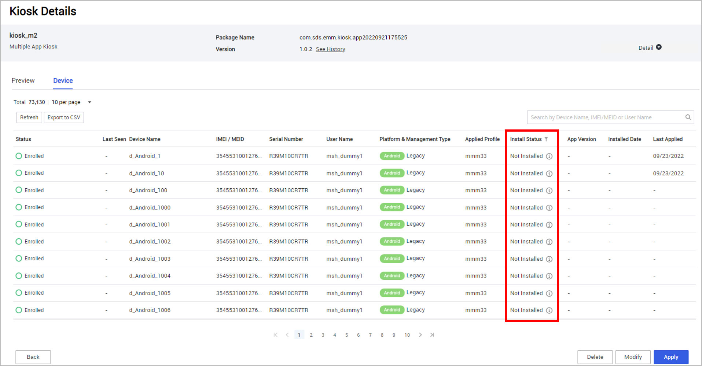
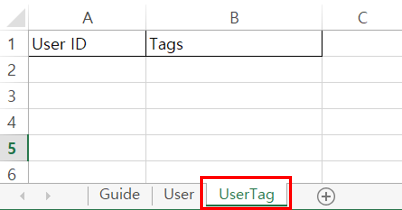
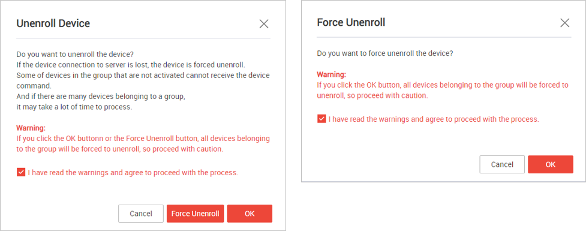
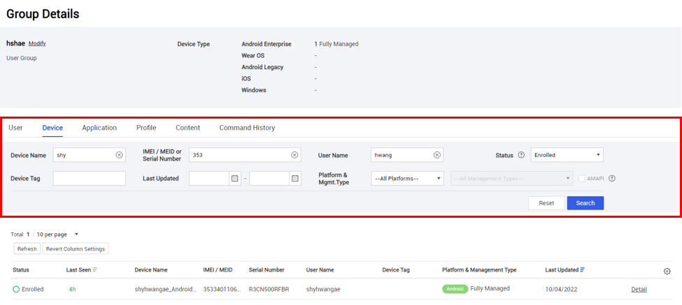
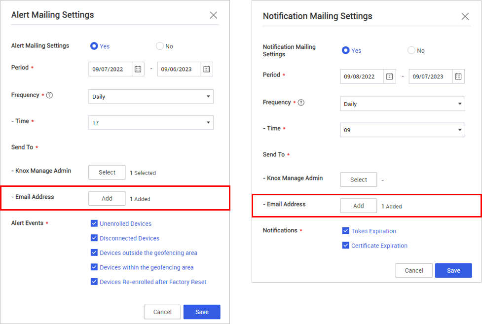

Knox Manage 22.11 release notes
Last updated March 28th, 2024
New
Support for Android 13
Knox Manage now supports enrolling and managing devices running Android 13.
Non-shared fully managed Android devices
Based on customer feedback, the Knox Manage team has implemented a new method of preparing a device for enrollment, called non-shared. You can consider it as a special enrollment method, like Knox Mobile Enrollment, that’s unique to fully managed devices.
The purpose of non-shared mode is to configure and enroll the device with a staging user, like a regular shared device, and then seamlessly transfer it to the actual user by transforming it into a fully managed device. Once the transformation takes place, the device can’t be reverted to its non-shared state. Because the majority of the configuration and enrollment activities take place when the device is in the admin’s possession, this new method minimizes disruption of the device user in demanding on-premises environments where they aren’t equipped, capable, or free to enroll the device on their own.
During setup, a non-shared device is like a typical shared device intended for a single business purpose, except it’s destined to be operated by only one user. Like shared devices, a non-shared device receives a basic configuration and a staging user for testing and administration, and applies a profile payload when an assigned user account starts a session. You can pre-load content and apps to the device, so long as you assign them to the group of the user account intended for enrollment.
For the initial release of this feature, a subset of Android Enterprise device commands is available. Check the Supported system column in the reference to see which apply.
Google server connection test
To assist you in assessing sync issues with Google’s servers when your Knox Manage tenant is linked to a Google Workspace tenant, there is a new test action available on the Knox Manage console. Go to Setting > Android > Android Enterprise, then click Test Connection to verify that both servers are successfully communicating.
Kiosk app installation status for Android kiosks
The list of devices on the Kiosk Details page now contains a column that indicates whether the latest version of the kiosk app package is installed.

Support for iOS 16
Knox Manage now supports enrolling and managing devices running iOS 16.
User enrollment for Apple devices
The 22.11 release adds support for enrolling BYOD (personally-owned) iPhones and iPads, an activity called user enrollment in the Apple ecosystem. The user account registered to the device must be tied to a Managed Apple ID in your Apple Business Manager organization. Unlike company-owned devices, BYODs can’t be supervised.
For this initial release of the user enrollment, Knox Manage supports iOS 13–15 and iPadOS 13–15.
Before you can enroll a BYOD iPhone or iPad, you must prepare it and the target user account:
- Enable user enrollment in the general settings of your Knox Manage tenant.
- Attach the Managed Apple ID to the user’s account in Knox Manage.
See Apple User Enrollment quickstart for further details about how this feature is integrated with Knox Manage, and how to configure it and start enrolling devices.
iOS policy additions
Knox Manage 22.11 adds support for the following iOS policies. This batch of policies concerns keyboard features.
| Category | Policy |
|---|---|
| System |
Content management for Windows devices
This release extends the mobile content management (MCM) features and capabilities to Windows devices. The typical behavior of Knox Manage and its agent concerning moving and deleting content applies to this platform.
Content is stored in the user account’s downloads directory. By default, the full destination path is:
%USERPROFILE%\Downloads\Samsung Knox Manage\Content
You can customize the destination to be anywhere inside one of the default account media directories in Windows:
- Documents
- Pictures
- Music
- Videos
After content is deployed to the device, the device user can view and open it on the Content tab of the Knox Manage agent.

Support for Windows kiosks
Knox Manage 22.11 brings kiosk mode to Windows devices. Kiosks are split between two types — single-app and multi-app. Single-app kiosks continuously run one app in full screen, while multi-app kiosks offer a selection of apps that the device user can choose from. Here’s a detailed feature breakdown between the two:
| Single-app Windows kiosk | Multi-app Windows kiosk | |
|---|---|---|
| Supported platforms | Windows 10/11 |
Windows 10 Pro, Enterprise, or Education Non-admin account |
| Supported app types |
Microsoft Edge 1 or Kiosk Browse Microsoft Store (UWP) apps |
Kiosk Browse Microsoft Store (UWP) apps Win32 apps |
| User entry point | Session welcome screen | App grid |
| User interface | Single web browser or app | Desktop with taskba |
| Login | Automatic | Automatic |
| Access to Downloads directory | No | Yes |
1 Requires Windows 10 version 1809 or higher.
For details and descriptions of Windows kiosks and how to configure them, see Manage Windows kiosks and Set up a Windows kiosk.
Windows policy additions
Knox Manage 22.11 adds support for the following Windows policies. This batch of policies primarily concerns apps and sharing data between them.
| Category | Policy |
|---|---|
| Application |
Chrome OS policy additions
Knox Manage 22.11 adds support for 66 new Chrome OS policies, plus 163 policies related to managed guest sessions. The majority of the new managed guest session policies are equivalent to existing base policies for the operating system, but are specific to that user mode.
Samsung DeX with Knox Remote Support
On devices running Android 10 or higher, the device user can now receive remote support when their Android device is connected to a Windows device through Samsung DeX.
For instructions on how to use these features in tandem, see Use Samsung DeX during a remote session in the Knox Remote Support docs.
MSP creation of read-only admins
MSPs in the Knox MSP Program can now create read-only sub-admins for Knox Manage tenants on the Knox MSP Portal. These sub-admins are stored and administered by the admin management system of the Knox MSP Program, not that of Knox Manage. Such a sub-admin can sign in to the tenant’s Knox Manage console without any additional registration. Higher-level admins that belong to the Knox Manage tenant, like super admins, can view these sub-admins’ roles, but not manage them.
Refer to Manage roles in the Knox MSP Program docs for more details.
Bulk user tagging
The bulk user registration template for adding new users contains new elements that let you add user tags:
-
The User sheet now has a Tags column that attaches tags to new users.

-
A new UserTag sheet allows you to attach tags to an existing user.

If you enter tags for the same user in both sheets, the UserTag sheet takes precedence.
Knox Service Plugin audit log
The Knox Manage team is committed to continuing support for Samsung’s partners in the Knox Validated Program. One of the targeted improvements for 2023 is a consolidated view for all Knox Service Plugin messages automatically delivered to the servers by the plugin. You can access this view by going to History > Audit Log, and clicking KSP Feedback.

From the dialog, you can click an entry’s number in the Devices column and view which devices produced the message.

Updates
Notice regarding upcoming changes to platform support
As a general reminder to all customers and users, Knox Manage will sunset support for the oldest versions of Android and iOS in Q1 2023. As of 23.03, Knox Manage will support:
- Android 8 and higher, up from 6
- iOS 14 and higher, up from 11
Furthermore, Android Legacy will be deprecated as a platform in 23.03. Management of devices using this platform may continue to function in the near future, but official development and customer support won’t be provided by Samsung teams from that release onward. We strongly recommend you migrate all devices using the Android Legacy platform to Android Enterprise.
For more information about the platform support plan of all Knox cloud services, see Policy update on Knox supported versions on the Samsung Knox blog.
Knox Manage agent notification permission in Android 13
Due to progressive privacy improvements in Android 13, after an Android 13 device is enrolled with a work profile, the Knox Manage agent requires permission from the device user to display notifications in the personal profile. As a brief reminder, the sole notification that the agent pushes after enrollment is a reminder to remove the agent itself. If the device user denies the permission, then they can still remove the agent from the personal profile manually.
Improvements to shared and non-shared Android devices
With the aim of enabling the non-shared setup mode and supplementing the feature set of regular shared devices, the following changes are made to the staging device experience and flows on the console:
- You can now prepare Wi-Fi access point configurations so that shared and non-shared devices can connect to on-premises networks out of the box.
- In the profile of a staging user, you can now choose between Shared Device and Non-shared Device to specify the device’s intended user provisioning.
- The Setting > Configuration > Staging & Shared Device page is renamed to Staging Device.
Improvement to auto-update setting for Managed Google Play apps
Previously, when you assigned a Managed Google Play (MGP) app and set its Auto Update Mode to Default Update, the app would attempt to update when the device was idle or charging up to 24 hours after an update was released.
As of 22.11, the Default Update option during assignment no longer uses this generic 24-hour period. Instead, it properly respects your tenant’s global Auto Update Apps setting defined in your base Android Enterprise configuration.
Improvement to Knox Browser homepage policies
The sub-policies that define the default URL for the Knox Browser — Homepage URL for regular Android devices and Default URL for Android kiosks — now provide the standard Lookup button to add lookup items to the policy’s value.
Miscellaneous changes to Android management
Lastly for Android management, Knox Manage 22.11 comes with the following miscellaneous changes:
- When defining the Mobile Country Code (MCC) and Mobile Network Code (MNC) settings in an APN configuration, you can now click Lookup to browse and select available lookup items.
- You can now employ the Samsung Knox Custom Animation policy group if you have the Knox Manage with Knox Platform for Enterprise license.
- On the Device Details page, the list of apps on the Application > Installed Application tab contains a Compromised column. You can now click and filter for all compromised apps.
- The Show ProgressBar when Installing Apps policy for Android Legacy profiles is deprecated.
- The Enable EAS, Disable EAS, and Authenticate SD Card device commands are no longer available for fully managed devices.
Miscellaneous changes to Apple device management
All instances of the term Device Enrollment Program on the console are replaced with Automated Device Enrollment to match the latest developments in the Apple ecosystem.
Changes to Microsoft Store app identifiers
In previous releases, when adding a public app on Microsoft Store to your tenant, you were required to register the app’s package family name (PFN) as its identifier.
Since not all apps on Microsoft Store have PFNs and Microsoft is in the process of retiring PFNs, the identifier is no longer mandatory in Knox Manage, and is now an optional method for locating apps on Microsoft Store. Starting with 22.11, Knox Manage automatically determines the app identifier from its Microsoft Store URL, with no additional input required from you.
EMMs cant verify the installation of apps without PFNs, so the Knox Manage console reports an app without one as having an undefined ( - ) installation status.
Time zone sync in Knox Remote Support Viewer
Previously, the time zone in the Knox Remote Support Viewer defaulted to UTC+00:00 the first time you accessed it.
The viewer now performs an initial time zone sync with the local time of your PC. After the sync, you can change the time zone by clicking your account name and selecting Time Zone.
Improvement to Knox Service Plugin integration
In a previous release of Knox cloud services, use of the Google EMM API was deprecated in favor of more modern technologies, simplifying how the Knox Service Plugin interacts with EMMs. However, Knox Manage still required you to manually approve the plugin before you could apply its policies to devices.
This release remedies that limitation by removing the manual approval of Knox Service Plugin. If you configure one of its policies in a profile, the Knox Manage console now automatically approves the plugin on your behalf.
Enhancements to unenrollment actions
On the Group page, you can now apply the Unenroll actions in bulk to all devices that belong to a group.
Since accidental use or misuse of these actions can have severe consequences on a large number of devices at once, the console asks you to confirm twice before submitting them.

Enhanced device search on Group Details page
Previously, the Device tab on the details page of a group offered only a simple search to narrow down devices, and search was limited to one device parameter — name, IMEI, user name, status, and so on — at a time.

With 22.11, the search on the Device tab has been greatly expanded to allow you to combine device parameters, similar to other advanced search interfaces in the console.

Enhancement to bulk app assignment
When assigning apps in bulk on the Application page, you can now configure the assignment settings to the apps based on platform and source through the Common Settings dialog. For example, if you assign three Managed Google Play (MGP) apps at once, you can specify their Installation Type and Auto Update Mode settings at once.

As with previous releases, you can still configure the assignment settings of a particular app by clicking See Other Apps and adjusting its options. Per-app assignment settings override common settings.
Increase to bulk app assignment limit
When assigning apps in bulk on the Application page, the maximum number of apps that can be assigned in bulk is increased from 20 to 100. This limit applies to almost all apps, including those from disparate platforms and sources. For example, you can assign public MGP and Microsoft Store apps to appropriate groups at the same time.
The exceptions to this limit are MGP private web apps and Apple Volume Purchase Program apps, which can’t be mixed with other sources. If you select an app from either of these sources and try and mix them with others, the Assign button on the page is disabled.
Custom recipients for automated emails
The automated email digests for both console alerts and notifications now accept custom recipients that aren’t attached to accounts belonging to your tenant. To add a custom recipient to either type of digest, click Add next to Email Address, then use the Add Email Address dialog.

Notification emails for keepalive
When using a keepalive configuration, you can now choose to send a one-time email digest when some of your fleet’s devices will expire soon.

You can schedule the email to be sent on any day leading up to the keepalive duration, minus one. For example, if the keepalive duration is set to 7 days, then the earliest the email could be sent is 6 days before expiration.

Updates to SCC software dependencies
During the development of 22.11, the Knox Manage team revisited the software test coverage for SCC server and client vulnerabilities. The following software and development kits are now covered in the internal compliance tests. New covered items are listed in bold.
| Software | Test versions |
|---|---|
| SCC client |
2.1.0.2 2.2.0 2.3.0 2.3.1 2.5.2.1 |
| Oracle OpenJDK |
1.8.0_181 1.8.0_251 1.8.0_291 1.8.0_311 1.8.0_341 |
| Azul Zulu Prime |
1.8.0_181 1.8.0_252 1.8.0_292 1.8.0_312 1.8.0_345 |
During testing, the following SCC dependencies were identified as needing updates in order to resolve potential vulnerabilities:
| Dependency | Previous version | Current version |
|---|---|---|
| Apache Commons BeanUtils | 1.9.3 | 1.9.4 |
| Apache HttpClient | 4.5.3 | 4.5.13 |
| Bouncy Castle | 1.48 | 1.68 |
| Hibernate ORM | 4.3.11.Final | 5.4.27.Final |
| certserve | 0.3.18 | 0.4.0 |
| MySQL Connector/J | 5.1.17 | - |
| Spring framework | 4.3.21.RELEASE | 5.3.23 |
| Netty Project | 4.1.24.Final | 4.1.67.Final |
| PostgreSQL JDBC Driver (pgjdbc) | 42.2.5 | 42.3.3 |
| c3p0:JDBC DataSources/Resource Pools | 0.9.2.1 | 0.9.5.5 |
| dom4j: flexible XML framework for Java | 2.0.0 | 2.1.3 |
| jackson-databind | 2.8.11.3 | 2.9.10.8 |
| log4j | 2.7.2 (client 2.17.1) | 2.17.1 |
| h2 database | - | 2.1.214 |
API updates
Knox Manage API 22.11 has the following changes:
| Operation | Change |
|---|---|
| deleteDeviceByDeviceId (Delete Device By Device ID) | New operation that deletes the device that has the provided unique ID assigned by Knox Manage. |
| deleteDeviceByImei (Delete Device By Device IMEI) | New operation that deletes the device that bears the provided IMEI. |
| deleteDeviceBySerialNumber (Delete Device By SerialNumber) | New operation that deletes the device that bears the provided serial number. |
| createUse (Add Device to User) | A new requestEnrollment bool parameter specifies whether to send an enrollment email to the user's address or to enroll them silently. Defaults to false. |
| selectDeviceList (Get Device List) |
Three new values in the response provide additional information:
|
| sendDeviceControlForLockDevice (Lock Device) | A new lockMessage string parameter specifies the text of the notice that appears on the device when it's locked. This value corresponds to the Message field of the Lock Device command on the console. |
| deleteSMSQueue (Delete SMS) | Deprecated because of switch to new SMS service. |
| selectSMSQueueList (Get SMS) | Deprecated because of switch to new SMS service. |
| updateSMSQueue (Update SMS) | Deprecated because of switch to new SMS service. |
Deprecations
Notice regarding upcoming changes to report queries
For reports, the Ownership code and Ownership fields are deprecated, and return no data. Both fields are slated for removal with the 23.03 release. If you generate a report containing only one of these fields, it will be blank. Use the Management Type field as a replacement.
On this page
Is this page helpful?